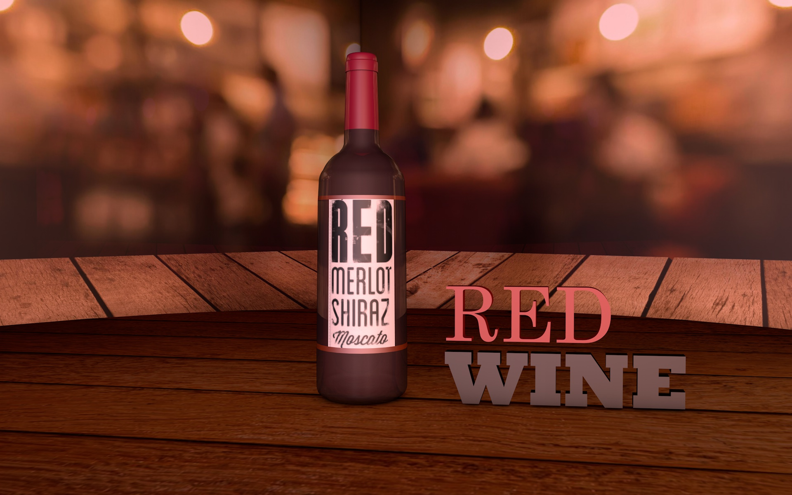

Portafolio de imagenes
Ejemplos de trabajos hechos por keterei Cervera que muestran sus conocimientos en diversas areas de diseño y creación de multimedia

Digital Designer - Illustrator - Editor
Ejemplos de trabajos hechos por keterei Cervera que muestran sus conocimientos en diversas areas de diseño y creación de multimedia